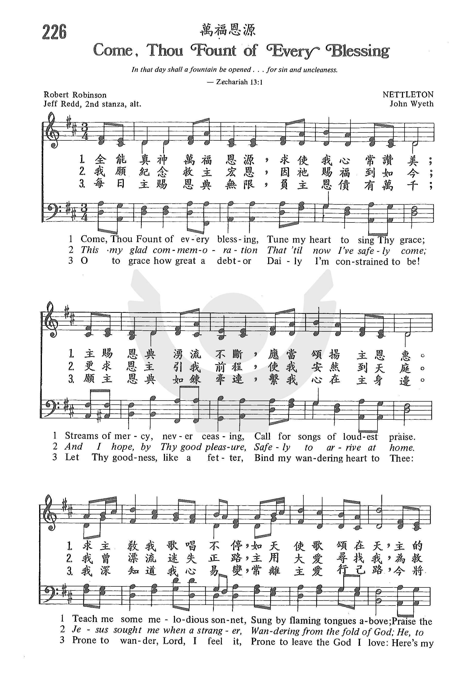

(請點耳機收聽)
(請點耳機收聽)| 簡介 Come, Thou Fount of Every Blessing |
| Written for Pentecost by a British Baptist pastor, this text is full of biblical terms like “Ebenezer” (1 Samuel 7:12), Hebrew for “a stone of help” set up to give thanks for God’s assistance. The tune name honors hymnal compiler Asahel Nettleton, who probably did not compose it. |
Come, thou Fount of every blessing
|
詩集：生命聖詩，76 |
|
|
全能真神，萬福源頭，懇求使我常歌頌， 主賜恩惠如川長流，應當頌讚主恩寵， 願主教我美妙樂章，猶如天使主前唱， 讚美救恩如山穩妥，救贖慈愛無限量。 我要立石記主恩典，蒙主幫助到如今， 尚望恩主一直引導，安抵天家蒙福蔭， 耶穌看我如羊失群，遠離父家走迷途， 主來救我脫離危險，流出寶血洗罪污。 每日主賜恩典無量，負主恩債難報償， 願主恩惠如鏈相牽，維繫我心與主連， 我深知道心易放蕩，遠離父家慕虛華， 今獻身心求加印記，永作主民在父家。
【以便以謝的神】 |
|
https://www.zanmeishige.com/tab/25584.html?songbook=1&index=226  |
|
http://www.hymncompanions.org/May/27/stream.php
全能真神萬福恩源，求使我心常讚美；
主賜恩典湧流不斷，應當頌揚主恩惠。
求主教我歌唱不停，如天使歌頌在天，
主的恩典無窮無盡，永遠穩定永不變。
我願紀念救主宏恩，因祂賜福到如今；
更求恩主引我前程，使我安然到天庭。
我曾漂流迷失正路，主用大愛尋找我，
為救我命寶血流出，賜我平安與快樂。
今日主賜恩典無限，負主恩債有萬千；
願主恩典如鍊牽連，繫我心在主身邊。
我深知道我心易變，常離主愛行己路，
今將身心完全奉獻，從今以後永屬主。
(請點耳機收聽)
神是我們萬福之源，我們一切所需，都可向祂祈求。祂既為我們捨下獨生愛子，豈有不賜其他之理？ 我們祗要有簡單的信心，就可無限地支取。
這首詩的作者羅賓遜（Robert Robinson, 1735 - 1790）出生英國 Norfolk。 八歲時喪父，家貧無法入學。
十四歲時赴倫敦當理髮店學徒，他好學不倦，常因勤讀疏虞工作而受責；後因交友不慎而生活不檢，嗜酒作樂。

十七歲時，他在一次露天佈道會中受了感動，經過兩年多的掙扎，他勝過了罪的綑綁，過重生再造的生活。
最初他加入了衛斯理佈道團，不久轉入公理會，最後受浸信會邀請在劍橋牧會。他一生沒有受過多少教育，一切靠自修，竟能在這舉世聞名的高等學府之地，帶領許多青年歸主；著名的奮興家司布真（Charles
H. Spurgeon）即是其中之一。 他的著作頗多，各教會人士都以先睹為快。
羅賓遜是一位熱情果斷、執著能幹、直言不諱的天才，有人稱他是當代的約拿。他的信息坦率有力，表達方式新穎，激發聽眾興趣。
他勤習拉丁文及法文，成為一位真正的神學家，而受大學生景仰。 牧會之餘，他開墾一農場以貼補家用。
羅賓遜一共寫了兩首詩，另一首是聖誕節的詩。 這首詩是他歸主三年後，自述他的屬靈經歷。 當年撒母耳戰勝非利士人「撒母耳將一塊石頭，立在米斯巴和善的中間，給石頭起名叫以便以謝，說，到如今耶和華都幫助我們。」（撒上7:12）羅賓遜覺得他心中也要立一屬靈的石頭「以便以謝」來紀念感謝神三年前幫助他征服撒但，來歸向祂。
有一位八十四歲的老太太很喜歡這首詩，她讀了這首詩的故事後，那年夏天她和家人在海濱渡假時，她囑咐每人選一塊石頭帶回她家。以後有基督徒訪客時，她也要他們帶一塊石頭來，不久在她院中也建立了一個小小的「以便以謝」紀念碑。
有一次羅賓遜在火車上，對座有一位女士介紹他讀一首好詩，並詢問意見。
他一看是自己的作品，就叉開話題，那女士堅持誇說該詩的優點，羅賓遜含淚回答她：「幾年前，我原是一個貧窮又卑微的人。
當我寫這首詩時，愉快的心情是世上任何財寶都換不到的。」
中英文聖詩集參考
英文歌名 Come,
Thou Fount of Every Blessing
頌主新歌 7
頌主新歌(中英雙語) 9
教會聖詩 226
生命聖詩 76
新聖詩 185
歡欣讚美 11
聖徒詩集 195
聖詩 271
台語聖詩 250
讚美 2
世紀讚頌 77
頌主聖詩 13
讚美詩(新編) 28

http://www.xueshengshi.com/?p=6184
经文：“撒母耳将一块石头立在米斯巴和善的中间，给石头起名叫以便以谢，说： “到如今耶和华都帮助我们’” (撒上7：12)。
《万福泉源歌》以它充实饱满的内容和轻松愉快的节奏得到许多人的喜爱。作者鲁宾逊牧师 (R.Robinson，1735一1790)原是英国圣公会信徒。他幼年时父亲去世，寡母送他到一家理发店当学徒，但理发店的主人觉得他有读书的天才而没有作理发师的能耐。他在 17岁时，有一天听见怀特菲尔德 (G.Whitfield)传福音时讲到“将来的忿怒” (太3：7)而受了感动，心里常感不安，但还犹疑不定。
经过了三年 的痛苦挣扎，终于在 1755年2O岁时因信主而内心得到快乐与平安。从此他开始热心布道，起先是在一所受加尔文 (见第5首注①)影响较深的卫理公会工作，继则转入独立宗，最后 (1761一 1790)终于成为一名大有能力的浸礼会牧师。他是一位自学成才的模范，一生好学不倦，虽没有进过大学的门，却能在大学生中间布道。在讲道方面，他是一位直言不讳的人，有人称他为当代的约拿。他所著《讲道集》、《基督神性论》、《浸礼会的历史》等都是有较高造诣的作品。但他写诗不多，《万福泉源歌》可以说是他总结个人重生得救的经验。从诗的内容还能看到当 时卫斯理兄弟奋兴运动的热情，反映出“到如今耶和华都帮助我们” （撒上7：12)的坚强信心。
https://en.wikipedia.org/wiki/Come_Thou_Fount_of_Every_Blessing
https://zh.wikipedia.org/wiki/%E4%BB%A5%E4%BE%BF%E4%BB%A5%E8%B0%A2
https://baike.baidu.com/item/%E4%BB%A5%E4%BE%BF%E4%BB%A5%E8%B0%A2/7279371

在撒上7章的内容里，主要描写了以色列人与非利士人争战，眼看就要面临惨败，就在这危急时候，撒母耳起来劝告以色列人悔改、离弃偶像，将心重归上帝。神显出奇妙的能力，打败非利士人，转危为安。以色列人这次成功乃在乎完全依赖上帝的神迹作为，当取得完全的胜利后，撒母耳就在米斯巴和善的中间立了一块石头，给石头起名叫“以便以谢”，说：“到如今耶和华帮助我们”！来自基督教《圣经》，摘自撒母耳记上第七章3-14节：“撒母耳将一块石头安放在米斯巴与耶沙拿（传统∶作『善』）之间，给石头起名叫以便以谢（即∶帮助的石头），说∶「这是永�琤D帮助我们的证据（传统∶到如今永�琤D都帮助我们）。」
寓意对象编辑
“到如今耶和华都帮助我们”，耶和华帮助的对象是他的子民，并非所有的人都能够得到神的帮助，这是我们清楚看见。
《圣经》记载，神帮助的对象是那些倾向他的人（撒上7：2-3）。
神帮助的对象是那些寻求他的人（拉7：6）。
神帮助的对象就是那些倚靠他的人（诗28：7）。
神帮助的人对象是那些心存诚实的（代下16：9）。
http://biblegeography.holylight.org.tw/index/condensedbible_detail?id=1495&top=0157-2&num=true
●以便以謝及善兩地的位置皆無從查考，米斯巴的位置則是在耶路撒冷的正北方約 12公里，故以便以謝似應在米斯巴的附近不遠之處。有學者建議是在 Burj el-Isaneh，位於示羅之南約 6 公里。
撒上7:12 神的約櫃被擄二十年後，以色列人聚集在米斯巴，擊敗了來犯的非利士人，撒母耳將一塊石頭立在米斯巴和善的中間，給石頭起名為以便以謝，說，到如今耶和華都幫助我們。
撒母耳將一塊石頭、立在米斯巴和善的中間、給石頭起名叫以便以謝、說、到如今耶和華都幫助我們。
撒上圖一 (046) 撒母耳任以色列先知 Samuel became the prophet of Israel ( 原圖 ) ( 地圖說明 ) |
|
|
( 以便以謝-2 地圖位置
: 未繪 位置不明，應該是在米斯巴的附近不遠之處。 )
|
|
 |
|
https://en.wikipedia.org/wiki/Eben-Ezer
Eben-Ezer (Hebrew: אבן העזר, ’eḇen hā-‘ezer, "the stone of help") is a location that is mentioned by the Books of Samuel as the scene of battles between the Israelites and Philistines. It is specified as having been less than a day's journey by foot from Shiloh, near Aphek, in the neighbourhood of Mizpah, near the western entrance of the pass of Bethoron. However, its location has not been identified in modern times with much certainty, with some identifying it with Beit Iksa, and others with Dayr Aban.[1]
It appears in the Books of Samuel in two narratives:
It is currently accepted among many Israeli archaeologists and historians to place the Eben-Ezer of the first narrative in the immediate neighborhood of modern-day Kafr Qasim, near Antipatris (ancient city Aphek), while the second battle's location is deemed to be insufficiently well-defined in the Biblical text. The other proposed site is called "Isbet Sartah".[3][4] Some scholars hold that there were more than one Aphek. C.R. Conder identified the Aphek of Eben-Ezer[5] with a ruin (Khirbet) some 3.7 miles (6 km) distant from Dayr Aban (believed to be Eben-Ezer), and known by the name Marj al-Fikiya; the name al-Fikiya being an Arabic etymological variant of Aphek.[6] Eusebius, when writing about Eben-ezer in his Onomasticon, says that it is "the place from which the Gentiles seized the Ark, between Jerusalem and Ascalon, near the village of Bethsamys (Beit Shemesh)",[7] a locale that corresponds with Conder's identification. The same site, near Beth Shemesh, has also been identified by Epiphanius as being Eben-ezer.[8]
http://www.sbagape.org/media/biblestudy/OT/htm/Samuel-05.htm
【閱讀經文】撒母耳記上7:1-17
約櫃在非利士待了七個月，被送回以色列地。由於沒有祭司指示他們當如何行，又因在伯示麥有多人擅觀約櫃而被擊殺，以色列人便懼怕約櫃，避之為恐不及。他們吩咐基列耶琳人把約櫃抬到他們那裡，基列耶琳人原是迦南七族之一，本該滅亡，後來與基遍人用詭計與以色列人談和，就在聖殿作劈柴挑水的人。神保守祂的約櫃，使它在基列耶琳有安息之所。約櫃雖在以色列地，卻不在以色列人中，他們仍隨從迦南的風俗，去拜巴力〔迦南的風雨之神，掌控田地出產和人的生殖〕和亞斯他錄〔巴力的妻，掌管爭戰之神〕。非利士人轄制他們20年，使他們的心憂傷痛悔，預備回轉歸向神。這期間也是撒母耳成長的歲月，神預備他成為一位忠心的祭司、先知，和戰士，要引導以色列人悔改，為他們禱告，帶領他們爭戰。只要神與他們同在，幫助他們，以色列人必定會勝過一切的仇敵。
【破冰題】
1. 回顧在人生的戰場上，印象最深刻的一場勝仗是什麼？
2. 你有沒有從誰得著幫助，影響了你的一生，請分享。
【討論題】
1. 約櫃後來被怎樣安置？以色列人有何改變？____________________________
2. 撒母耳如何帶領以色列人回轉歸向神？________________________________
3. 以色列如何勝過仇敵？以便以謝是什麼意思？__________________________
4. 請總結撒母耳這一生的服事。有何特殊之處？__________________________
【結論】
爭戰的成敗不在乎人，而在乎神，以色列人勝過非利士人是因為有神幫助。他們立了一塊石頭起名叫「以便以謝」，意思是「幫助的磐石」，表示：到如今耶和華都幫助我們。然而，過去以色列人被非利士人打敗，那地也叫以便以謝(撒上4:1)，但耶和華不幫以色列人，卻是幫助非利士人。要得著神幫助的條件不是我們求神站在我們這一邊，而是我們要選擇站在神的那一邊，因為只有神是永遠得勝的，只有在祂那一邊才能得勝。對於稱為神的子民而言，無論過去是悖逆或遠離神，只要自卑悔改，回轉歸向神，神必眷顧(代下7:14)。只要順服，遵行神的旨意，就是站在神的這邊(書5:13-15)。藉著「以便以謝」的故事，神把爭戰得勝的原則啟示給我們，叫我們緊緊倚靠神，隨時都站在神的這一邊，便要與祂一同得勝。
【分享與應用】
1. 有沒有經歷過神的幫助，靠主勝過各樣的爭戰？請分享過程。
2. 請分享成為基督徒後，是否曾遠離神，後來又回轉歸向神的經歷。
參考資料
一. 約櫃安在基列耶琳
1. 約櫃在基列耶琳：以色列人不知如何處理約櫃，便把約櫃交給基列耶琳人，從此把約櫃遺忘了，直到大衛的時代，經過尋訪，才把約櫃找到(詩132:1-6)。但基列耶琳人亞比拿達卻慎重其事，派他兒子以利亞撒〔神幫助〕看守約櫃。
2. 傾向耶和華：「傾向」的原意有「憂傷痛悔」之意，就如士師時代，當他們受仇敵欺壓，甚覺窘迫，便向神哀求(士10:9-10)。神的子民只要自卑、禱告，尋求神的面，承認自己的罪，神是信實的，必要赦免我們的罪(約一1:9)。
二. 以色列人回轉歸主
1. 撒母耳勸誡百姓：撒母耳呼籲以色列人回轉，就如施洗約翰傳悔改的信息。
a. 一心歸向耶和華：神是獨一的真神，除祂以外，再無別神，單要求告祂。
b. 除掉迦南的偶像：表明自己完全是屬神的，不再與偶像有任何關聯。
c. 為以色列人禱告：是祭司的職分，就如基督是我們的大祭司，現今在父右邊為聖徒代求(羅8:34)，我們只管坦然無懼到主前求幫助(來4:14-16)。
2. 以色列人誠心悔改：不再自以為義，而是心裡柔軟，承認自己得罪耶和華。
a. 打水澆奠，代表潔淨自己，棄掉偶像(結36:25)，象徵悔改的洗(徒19:3)。
b. 以禁食表示刻苦己心(拉8:21)，在神面前自卑，尋求神的面和神的旨意。
c. 撒母耳審判他們，舊約的審判是藉著律法，也藉著神的話。新約聖徒則靠著聖靈，使人為罪、為義、為審判，自己責備自己(約16:8)。
三. 以色列人勝過仇敵
1. 向神呼求：當仇敵前來爭戰，以色列人的反應就是透過先知撒母耳向神呼求。到末時，神透過聖靈，叫人求告主名，就必得救(徒2:17-21; 羅10:9-13)。
2. 獻上燔祭：代表基督的救贖工作，祂是神的羔羊，藉著祂的血，使我們罪得赦免，與神和好(弗2:13)。我們便站在神這一邊，祂帶領我們勝過一切仇敵。
3. 以便以謝：當神使以色列人打勝仗後，撒母耳就立一塊石頭，稱之以便以謝，意思是「幫助的磐石」。神若幫助我們，誰能敵擋我們呢(羅8:31)。
四. 撒母耳一生的事奉
撒母耳一生有君王、祭司、先知的職分，領導以色列民，正如彌賽亞的職分。
1. 擔任士師：士師是當時軍事和政治的領袖，並擔任法官，仲裁糾紛。撒母耳帶領以色列人收復失地，與亞摩利人和好，並巡行各地，審判以色列人。
2. 為神築壇：築壇為著向神獻祭，獻祭是祭司的職務，當時示羅被毀，會幕和約櫃都不再，所以便回復到先祖亞伯拉罕築壇的方式敬拜神(創12:7-8)。
3. 住在拉瑪：哈拿把兒子奉獻給神，並沒有失去兒子，兒子又回到家鄉來住。在拉瑪，撒母耳監管一班先知(撒上19:20)，可能訓練他們作先知啟示的事奉。
https://blog.xuite.net/hope.church/Matthew/408030797
110227以便以謝─幫助之石(撒上7:1~13)
詩歌《以便以謝的神》
「祢是以便以謝的神，到如今都幫助我們，當爭戰來臨我們必要得勝，因耶和華幫助我們。…」這是一首極為激昂動聽的敬拜詩歌，但若不了解「以便以謝」的意義，似乎很難融入詩歌的意境裡。以便以謝的典故出自舊約聖經的撒母耳記上(簡稱「撒上」)7:12『撒母耳將一塊石頭，立在米斯巴和善的中間，給石頭起名叫以便以謝，說：「到如今耶和華都幫助我們」』。西方一些教堂的門樓上常刻有「以便以謝」，以示對上帝的感恩，更有教會直接取「以便以謝」為名呢！NIV英文聖經注釋：以便以謝(Ebenezer)意思為「幫助之石」(Stone
of the help)。
以便以謝事件的歷史背景
以便以謝歷史事件的背景，約在主前1,100年士師時期的末期；撒上1~3章闡述了主上帝呼召撒母耳為先知的經過。第4章提到以色列人出去與非利士人打仗，安營在以便以謝，兩軍交戰，結果以色列人戰敗，而非利士人將約櫃擄去，作為戰利品，以為他們的神超越以色列人的神，以便以謝之役即為以色列的恥辱。第5章提到非利士人將神的約櫃從以便以謝抬到亞實突(非利士五個主要城市之一)，並將神的約櫃抬進大袞廟(非利士人的主要神明，可能是風暴神或穀神)，主上帝卻重重地懲罰那地，他們便將約櫃多次移往他處，所到之處，哀鴻遍野，上帝的約櫃頓時成了燙手山芋，狼狽不堪。第6章論到非利士人歸還約櫃的經過，從境外的非利士的亞實突到境內猶大支派的伯示麥，主上帝皆多次大顯神威。第6章末到第7章前，論到約櫃座落在基列耶琳亞比拿達的家中(7:1)，直到大衛把它運到耶路撒冷為止。
先知撒母耳實施宗教改革，淨化信仰。(7:3~4)
後來，從約櫃座落在基列耶琳境內亞比拿達的家中，經過了20年，騎牆的以色列人總算較傾向耶和華崇拜。在這段期間，以色列人仍頻頻受非利士人的欺壓。此時，先知撒母耳伺機開始推行宗教改革，試圖淨化以色利人的宗教，免受宗教混合主義的侵蝕。以色列民間的宗教信仰普遍混雜著迦南宗教的陋俗，有的人拜巴力[註：相傳是掌管風雨、控制田地出產和使婦女懷孕的生殖神；迦南神話中，最重要的是巴力的死與復活，並且與自然界的死和復活循環相配。迦南人認為，當在儀式中重演神話，自然界的力量也能夠重新恢復，使他們獲得肥沃的土壤、牲口與人丁等。在舊約時代，巴力和耶和華的信仰在巴勒斯坦一帶曾多次角力，以色列王國和猶大王國兩國的當權者就曾多次交替轉換信仰；巴力被稱為是「大袞的兒子」。]，有的人拜亞斯她錄[註：巴力的配偶之一，是一位掌管愛情、生育及戰爭的女神。亞斯他錄和亞舍拉似乎是指同一位女神(雖然有些學者反對)，帶有誇張的性特徵，伴隨著邪惡的虐待性性變態，在烏加列史詩文學中也有這種令人噁心的描述。崇拜的活動還帶包括宗教男娼和女妓之異性通姦與同性相姦在內。]，也有的拜亞舍拉女神[註：迦南諸神缺乏絕對的道德屬性，使得諸如宗教娼妓、獻嬰孩為祭、淫蕩的崇拜這類敗壞、人神共憤的行為，變成他們表達宗教虔誠和熱心的正常方式。]因此，惹得耶和華上帝義憤填膺，廔廔降災，嚴懲以色列人。所以，先知撒母耳決定實行宗教改革，淨化信仰，導正社會風氣，他遍行各地，大聲疾呼以色列人認罪悔改，撒上7:3『撒母耳對以色列全家說：「你們若一心歸順耶和華，就要把外邦的神和亞斯她錄從你們中間除掉，專心歸向耶和華，單單地事奉他。他必救你們脫離非利士人的手。」』結果，以色列人似乎呼應了先知撒母耳的籲求，把諸巴力和亞斯她錄除掉。
在米斯巴重新立定心志(7:5~6)
為了淨化宗教，撒母耳引導以色列人聚集在「米斯巴」這個地方，它是便雅憫境內的一市鎮，「米斯巴」字義是「守望台」，位於便雅憫支派境內，耶路撒冷北方13公里。「米斯巴」則有一定的政治敏感度，那裡是當地的宗教與政治的中心。他們要在米斯巴召開一次宗教會議，透過禁食禱告與獻祭認罪悔改，為民族帶來屬靈上的復興，同時也帶來政治上的革新。撒母耳怎麼做呢？撒上7:6『他們就聚集在米斯巴，打水澆在耶和華面前，當日禁食，說：「我們得罪了耶和華。」於是撒母耳在米斯巴審判以色列人。』「打水澆在耶和華的面前」，有幾種解釋，1.
以此表明生命的短暫，死亡因人犯罪而速速臨近(參撒下14:14)；2.
是紀念神眷顧的儀式，因昔日列祖在曠野時缺水曾蒙耶和華神奇的供應(參出17:6;民20:11)；3.
是一種宗教儀式，象徵悔改及贖罪(參撒下23:16)。關於「打水澆在耶和華的面前」，舊約聖經中沒有別的經文提及這種儀式，依據前後文的脈絡，這似乎是象徵人在痛悔自卑中向神倒空自己，或是飲水思源感恩的動作。接著，撒母耳便帶領以色列人自我反省，先安內再攘外，在對外爭戰取得勝利以前，必先認罪悔改，推行社會改革、心靈改革，才能萬眾一心，確保革命成功。
非利士人試圖破壞以色列人的宗教復興與政治革新(7:7)
7:7『非利士人聽見以色列人聚集在米斯巴，非利士的首領就上來要攻擊以色列人。以色列人聽見，就懼怕非利士人。』為何非利士人看見撒母耳引導以色列人到米斯巴聚集，就想攻擊以色列人呢？也許以色列人在米斯巴的聚會，是一個號召各支派同盟集聚，同仇敵愾的團結大會，他們平時處於分治的狀態，危難臨到時，會找機會集結，團結對外；也許這個會議召開以後，會讓以色列人士氣高昂，戰力會有如神助一般加持，勢如破竹；加上米斯巴是個兵家必爭之高地，是戰略的要塞，因此有政治、軍事、宗教的戰略意義，所以，非利士人想要先發制人，擾亂他們的祭典，不讓他們有重新集結的機會。面臨來勢洶洶的非利士大軍，以色列人難免極其恐慌。
以色列人呼求耶和華並獻上全牲的燔祭(7:8~9)
7:8『以色列人對撒母耳說：「願你不住地為我們呼求耶和華─我們的 神，救我們脫離非利士人的手。」』由此可知，在危難時，這時的以色列人懂得透過先知向神不住地呼求。於是7:9『撒母耳就把一隻吃奶的羊羔獻與耶和華作全牲的燔祭，為以色列人呼求耶和華；耶和華就應允他。』「一隻吃奶的羊羔」只有7~8天大的羊羔，我們不知道為何此處要強調這祭物是「吃奶的羊羔」，不過利22:27
記載，出生8天的牲畜就可以當祭物了。它的意思也許是將完全純淨、無暇庇的擺上為祭，用這來表明內心全然的悔悟。而且是「作全牲的燔祭」，燔祭牲必定是公的牲畜：公綿羊、公山羊、公牛、斑鳩、或是雛鴿；而且是沒有殘疾的。獻供物的人要按手在燔祭牲的頭上，燔祭便蒙悅納，為他贖罪。燔祭代表全人的奉獻，因此整隻祭牲，除了皮歸給祭司外，全都燒在壇上。按以色列人古禮，燔祭要放在壇的柴上、從晚上燒到天亮。早上祭司便收起壇上所燒的燔祭灰。祭牲的血要灑在壇的周圍，代表藉著血，祭牲的生命奉獻給神。以新約的角度看這一幕，羊羔明顯地是預表了基督耶穌，祂是聖潔的羔羊，是神與人之間的中保，以義的代替不義的，表明了祂的愛與赦免。
耶和華大發雷聲，驚亂非利士，以色列人乘勝追擊。(7:10~11)
後來，7:10『撒母耳正獻燔祭的時候，非利士人前來要與以色列人爭戰。當日，耶和華大發雷聲，驚亂非利士人，他們就敗在以色列人面前。』萬物是神所造的，祂能夠藉萬物彰顯祂的權能與榮耀；世人的愚昧，是將萬物神格化，加以膜拜，以滿足自己的私慾；反之，至高的主上帝，是統御萬有的主宰，祂是聖潔的，是公義的，祂有崇高的倫理要求，約束祂的子民，藉著約與律法，保守他們常在神的愛中。主上帝可藉任何力量來彰顯祂的作為，而這一次，祂選用大自然界的雷，來彰顯祂的救贖，對於非利士人來說，以色列的神也能藉駕馭大自然來彰顯大神蹟，主上帝大發雷霆是一個很大的震撼，這一位神是非同凡想的；對於以色列人來說，這個神蹟堅固了他們的信心，平常默不作聲的神，對祂的子民是有所要求的，患難的煎熬是信心的磨練，受外邦人欺壓，是主上帝對自己選民悖逆的懲罰，神的默不作聲，對我們來說，是個警惕。即使當時非利士人把約櫃擄去，也不能表示祂是無能的，從非利士人被迫把約櫃歸還，即可知主上帝是大而可畏的神，以色列人的失敗是祂懲罰他們的結果，為要彰顯祂的公義。如今，以色列人回轉了，藉著不住地呼求，以及獻上全牲的燔祭，結果他們蒙神悅納，事就成了。
以便以謝─幫助之石(7:12~13)
7:12~13『以色列人從米斯巴出來，追趕非利士人，擊殺他們，直到伯甲的下邊。撒母耳將一塊石頭立在米斯巴和善的中間，給石頭起名叫以便以謝，說：「到如今耶和華都幫助我們。」』究竟「以便以謝」有何信仰的意義呢？
1. 撒母耳聳立石碑，是一種感恩的舉動：
帖前5:18『凡事謝恩；因為這是 神在基督耶穌裡向你們所定的旨意。』我們容易遺忘神恩，何況是後代子孫，有誰會記得前人所受之神恩，除非立碑留念，或著述代代相傳，或設立特定的感恩節期來回顧，否則很難成為永久的記憶。所以牧師建議教會的兄姐，寫下你們的見證來作為回憶錄，一點一滴地數算神的恩典，系統性的整理有助於個人見證的分享，留下來的資料更可以讓您的後代子孫，了解神在您身上所行的大事。2. 取以便以謝為名，是記念耶和華適時的幫助，這是他們凡事謝恩的原因。
回顧整個以色列的歷史，主上帝在他們歷史的舞台上從不缺席，時而彰顯，時而隱匿；在國家強盛、太平盛世的表面，有先知站出來警告他們勿忘神恩，勿忘社會公義的立國精神，勿忘單單敬拜耶和華…，這些忠言逆耳的話，他們不但不聽，還迫害神的先知忠良，結果，上帝重重地懲罰他們，讓他們經歷看似固若金湯聖殿被毀、家破人亡，以及被擄遠離家園的傷痛，神似乎遠離，但是，神也差派安慰的先知帶來釋放的信息，引導他們重回耶路撒冷，重建家園，更重建了聖殿，一路走來，上帝的憐憫與公義，始終如一，凡祂走過，必留下痕跡。所以，以色列人用節期來紀念主上帝適時的幫助，譬如早期的逾越節到晚期猶太人的光明節等等。
3. 取以便以謝為名，有轉化恥辱為榮耀的意義；
前述提到，以色列人兵敗以便以謝，非利士人將約櫃擄去，作為戰利品，以便以謝之役即為以色列的恥辱；如今，以色列人總算討回了顏面。以便以謝不再是恥辱的回憶，而是勝利與光榮的歷史戰役。如同十字架一般，原本它是猶太人恥辱的象徵，如今卻成了基督徒勝利的象徵。俗語說，「從哪裡跌倒，就從哪裡爬起來。」主上帝親自洗刷了他們的冤屈；今天的時代，我們有些過往的經驗，也許是痛苦、恥辱的回憶，但藉著主耶穌十架的寶血，洗淨了那些不堪回首的記憶，並在施恩寶座前，蒙神悅納了。人生尤如堆積土一般，無人能堆得完美無缺，少許的缺失，不宜全盤推翻，重頭來過，因曠日而費時，徹底地破壞，不能保證完美的建造，唯有稍作修補，亡羊補牢，繼績前進，榮耀就在盡頭。
4. 以便以謝事件，提醒我們要單單事奉主上帝。
撒上7:3~4，先知撒母耳多次曉諭以色列人要單單事奉主上帝。由於，在日常生命中，主上帝似乎隱匿，默不作聲，實則祂在高天鑒察人心。神的子民容易因眼目的所見而受迷惑，以色列人因而受迦南民間宗教傷風敗俗的陋俗所影響，遠離了耶和華崇拜；今天的時代，許多屬神的子民，為了許多的理由，無法親近神，世俗的勞勞碌碌，佔據了他們的時間與精神，他們似乎失去了與神親近的急迫感。主耶穌說過：『一個僕人不能事奉兩個主；不是惡這個愛那個，就是重這個輕那個。你們不能又事奉 神，又事奉瑪門。』現今，最大的宗教應該是瑪門教，不是基督教，多數的人拜的是財神，不是真神，大多數的人總是以為，有錢能使鬼推磨。所以，希望我們能喚醒自己的急迫感，單單事奉主上帝，在不義的錢財上不忠心，期待神把那真實的錢財託付於我們。